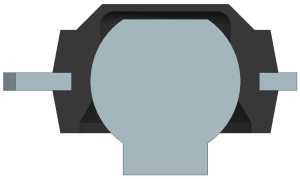
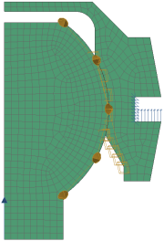
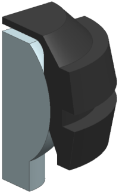
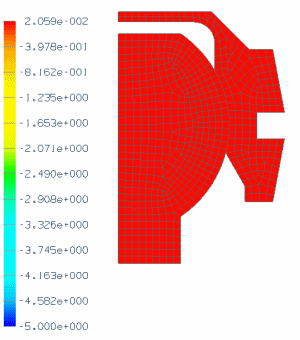
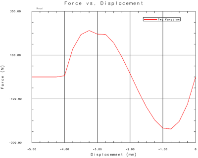

Geometric nonlinear analysis project
Advanced Simulation is capable of modeling geometric nonlinear problems such as the one described below.
Objective
A ball and socket joint similar to those used in windshield wiping systems is illustrated below. The joint consists of a steel ball pressed into a nylon socket that has been insert-molded onto a steel connecting rod. (Only the end of the rod is shown.) Graph the axial force required to pull the ball out of the socket versus axial displacement.

|

|
Section view
Required data
|
Property |
Value |
|
Part |
spherical_joint_separation.prt |
|
Solution sequence |
SOL 601, 106 Advanced Nonlinear Statics |
|
Idealization |
Model using axisymmetry |
|
Material |
Nylon for socket Steel for ball |
|
Mesh |
CQUADX8 Element size 0.5 mm Paver mesh |
|
Constraints |
See notes regarding constraints Use advanced axisymmetric nonlinear contact between the ball and socket |
|
Loads |
None |

Notes
Use SOL 601, 106 Advanced Nonlinear Statics because the problem is axisymmetric, includes large displacements, and requires contact. When you are creating the FEM and Simulation files, select Axisymmetric Structural as the Analysis Type, and select ZX Plane, Z Axis as the 2D Solid Option.
Create an axisymmetric representation of the structure in the XZ-plane.
-
Use the Promote command to promote the ball and socket in the idealized part.
-
Use the Split Body command to section the structure.

-
In the FEM, turn off the unused polygon geometry. Then use the Show Only command to make only the graphics in the first and fourth quadrants of the XZ-plane visible.
Create a Solid Axisymmetric ZX Collector for both the ball and socket meshes. Then mesh the ball and socket using CQUADX8 axisymmetric solid elements.
Define contact between the ball and socket using Advanced Axisymmetric Nonlinear Contact. A pointed feature arises in the model of the socket where the spherical ball feature and conical inlet feature meet. Because of this, make the two relevant edges of the socket model the source region, and make the circular edge of the ball model the target region.
Constrain the socket edges that contact the connecting rod as follows:
-
Fix the nodes on the vertical edge.
-
Permit only radial (X-direction) displacements on the lower horizontal edge.
-
Allow the upper horizontal edge to displace freely.
Use the values listed in the table below to apply an Enforced Displacement Constraint of 5 mm in the negative Z-direction to a node along the bottom edge of the ball. The first 10 sec are added to improve viewing of post-processed results.
|
Row ID |
time (sec) |
length (mm) |
|
1 |
0 |
0 |
|
2 |
10 |
0 |
|
3 |
30 |
-5 |
Edit the solution to:
-
Define 30 time steps of 1 sec each. In the Solution dialog box, under the Case Control tab, click Create Time Step Intervals. In the Modeling Objects Manager dialog box, click Create and enter 30 for the number of time steps. After creating the time step, in the Modeling Objects Manager dialog box, click Add to add the time step to the modeling object list.
-
Specify automatic time stepping and activate line searches as the strategy parameters. In the Solution dialog box, under the Case Control tab, click Create Modeling Object (Strategy Parameters). In the Strategy Parameters dialog box:
-
Under the Analysis Control tab, from the Automatic Incrementation Scheme (AUTO) list, select ATS.
-
Under the Equilibrium tab, from the Use Line Searches (LSEARCH) list, select Yes.
-
-
Account for large displacements. In the Solution dialog box, under the Parameters tab, select Large Displacements.
Expected Results
After you solve the model:
-
Animate the Z-direction nodal displacements across iterations. After changing the deformation scale to 1.0 and absolute, the animation should look similar to the one shown below.

-
For the node with the enforced displacement, create graphs of displacement and reaction force in the Z-direction versus iterations. Then combine the two graphs to produce a graph of reaction force versus displacement. After formatting, the resulting graph should look similar to the graph shown below.

Notice that:
-
The data corresponding to Iteration 1 is at the right end of the curve and the data corresponding to Iteration 30 is at the left end of the curve.
-
The ball separates from the socket between 0 mm and about -2.00 mm. The peak separating force is about 238 N.
-
From about -2.00 mm to -4.00 mm, the reaction force balances the spring-back force produced by the socket.
-
For a detailed description of how to create both the animation and graph, see the Display nonlinear analysis results activity.
Completed project
For your reference, a completed model for this project is located in the ..\projects\solved_project_models folder.